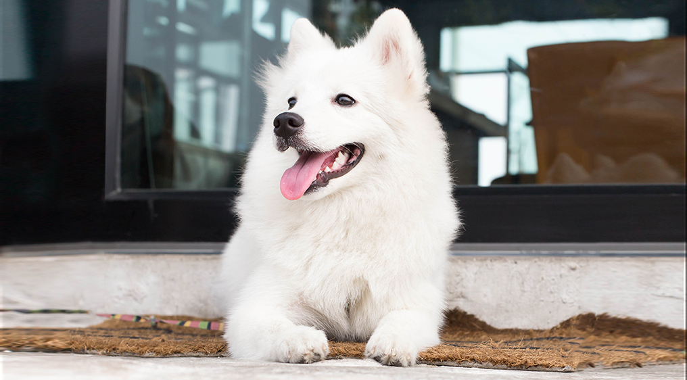

| דף ראשי | גזעים | מחלות | רקעים ותמונות | סקר | צרו קשר |
|---|
| קוקר ספאנייל |
| סמוייד |
| שפיץ יפני |
| פומרניאן |
| פודל |
| דני ענק |
| דלמטי |
| רועה גרמני |
| רועה קווקזי |
| רועה בלגי |
| בולדוג אמריקאי |
| בולדוג צרפתי |
| בולדוג אנגלי |
| צ'או צ'או |
| שיצ'ו |
| אמסטף |
| פינצ'ר |
| רוטווילר |
| דוברמן |
| האסקי סיבירי |
שפיץ יפני
מידע נוסף
שפיץ יפני (הידוע גם כניהון סופיצו) הוא כלב קטן בינוני מגזע השפיץ, אשר פותח בשנות ה1920 וה-30 מסוגים אחרים של כלבי שפיץ. גודלו האידיאלי של הכלב עדיין נתון לוויכוח, אך מה שידוע שהוא תמיד יותר גדול מבן דודו הפומראני. למרות שמדובר בגזע חדש יחסית, רמת המוניטין של שפיץ יפני עולה מרגע לרגע בשל אופיו הידידותי והמלבב כלפי בני אדם וכלבים אחרים ומראהו החיצוני הנעים לעין.
שפיץ יפני - מקור הגזע והיסטוריה
בשנת 1920 החלו להרביע כלבי שפיץ שונים ביפן על מנת ליצור גזע יפני משובח. תחילה השתמשו המרביעים בכלב שפיץ גרמני בשל פרוותו הלבנה ובשנות ה20 המאוחרות שילבו בתהליך גם כלבי שפיץ קטנים יותר על מנת להשביח את הגזע. לאחר שרמת הפופולריות של הכלב עלתה ביפן בשנות ה50, החלו לייבא את הכלב לשוודיה. משם הועבר הגזע לאנגליה, ולשאר העולם לאחר שזכה בהכרה מאיגודי כלבים שונים ברחבי העולם כמו קנדה, ניו זילנד והודו.
שפיץ יפני - נתונים ומאפיינים
מתחת לפרווה הארוכה של שפיץ יפני ישנה שכבת הגנה עבה מאוד וצבעה תמיד לבן כשלג. הזנב עטוף בהמון פרווה והוא מגולגל למעלה על הגב, למרות שבאזור הרגליים וכפות הרגליים ישנה פחות פרווה מאשר על שאר הגוף. האוזניים של הכלב מחודדות ועומדות, והאף והשפתיים שחורות. שפיץ יפני בוגר מגיע למשקל ממוצע של כ5-10 ק"ג ולגובה ממוצע של כ30-38 ק"ג.
מחלות נפוצות וטיפול - כלב שפיץ יפני
שפיץ יפני הוא גזע בריא בדרך כלל ובעל מעט מאוד בעיות גנטיות. הבעיות הפיזיות העיקריות אצל כלבים מסוג זה הן מצבים בהם פיקת הברך יוצאת וזזה ממקומה הטבעי ויש צורך בטיפול וטרינרי או מצב של עיניים רגישות בשל נקבי דמעות קטנים מאוד. על כל מצב ומקרה בריאותי או חשד לכך, יש לפנות ולהתייעץ עם וטרינר.
